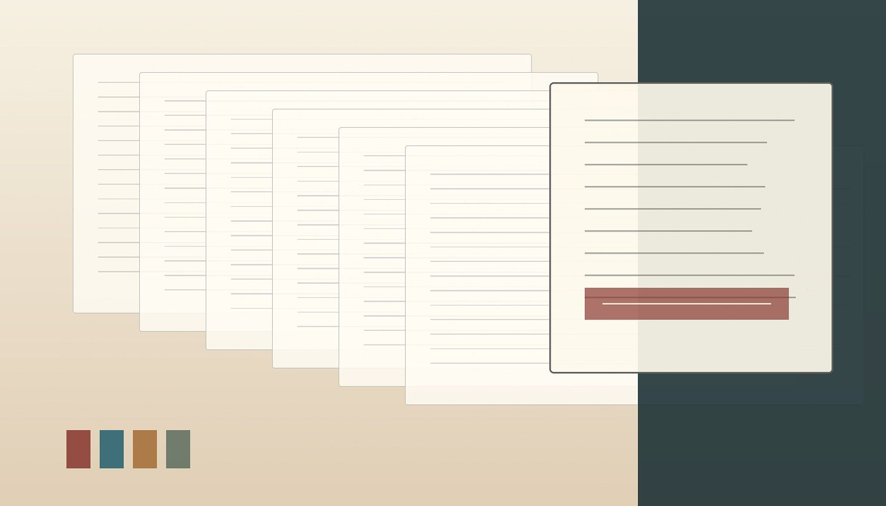

A short note on spectral gaps in sparse operators
A compact research note describing a stable model, a proof sketch, and a clear record of assumptions. The format is designed for results that need precision before they need length.
Theoria collects compact research dispatches, theorem-led essays, reproducible notes, and discovery records in a calm journal format built for close reading.
A concise lead item gives the archive a living front page: specific enough to feel current, quiet enough to keep the research at the center.
A compact research note describing a stable model, a proof sketch, and a clear record of assumptions. The format is designed for results that need precision before they need length.
Search across notes, theorem briefs, news items, and discovery records. Filter by section when you need the archive to behave more like a journal desk than a file list.
The carousel keeps one or two important statements visible without turning the landing page into a full paper.
Rotate concise theorem cards, definitions, or proof openings. Each card should contain a real statement and a clear field label.
Three disciplined channels keep updates distinct: timely context, new observations, and stable mathematical reference material.
Brief updates, corrections, release notices, and clear context for changes that affect ongoing work.
Research notes, provisional findings, experimental records, and field reports with limitations stated up front.
Statements, assumptions, proof sketches, notation, and references kept in a stable editorial form.
Use the article template for standalone HTML documents: theorem briefs, notes, discovery records, or short reports. Each document can live in its own folder and keep its figures, references, and article structure together.
